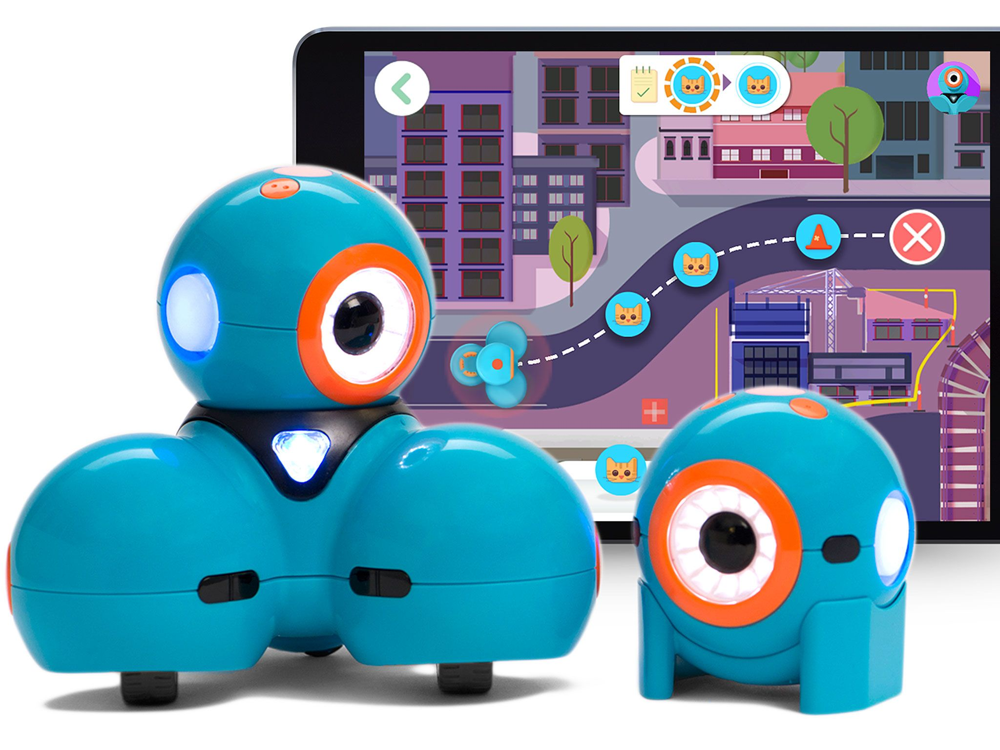

|  | I learnt how to program the Dash Robot to navigate obstacle courses and fire a catapult | I created a Underwater World game in Python where the player controls a fish to eat other smaller fish and grow in size | |
| I created a Castle Defence game in Scratch 3.0 that involves protecting a Castle from enemy knights |
|
I programmed the mBot to follow lines and grab objects with a arm attachment |